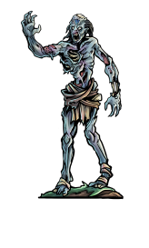
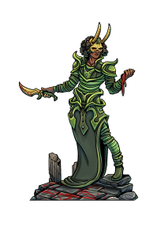

|

ZombiMort-vivant de taille M, neutre mauvais
Classe d'armure 8
Points de vie 22 (3d8 + 9) Vitesse 6 m FOR
13 (+1) DEX
6 (-2) CON
16 (+3) INT
3 (-4) SAG
6 (-2) CHA
Jets de sauvegarde Sag +05 (-3) Immunités aux dégâts poison Immunités aux états empoisonné Sens vision dans le noir 18 m, Perception passive 8 Langues comprend les langues qu'il connaissait de son vivant mais ne peut pas parler Puissance 1/4 (50 PX) Tenacité de mort-vivant. Si des dégâts font tomber le zombi à 0 point de vie, celui-ci doit effectuer un jet de sauvegarde de Constitution DD 5 + les dégâts subis, sauf en cas de dégâts radiants ou coup critique. En cas de réussite, il tombe à 1 point de vie à la place. Bouffée de cendres. Quand le zombi essuie des dégats pour la première fois, toutes les créatures vivantes situées dans un rayon de 1.5m autour de lui doivent faire un jet de sauvegarde de consitution. Celles qui échouent sont désavantagées sur les jets d'attaque et de sauvegarde, ainsi que sur les jets de caractéristique, pendant une minute. Une créature peut répeter le jet de sauvegarde à la fin de chacun de ses tours. Elle met un terme à l'effet dès qu'elle en réussit un. Actions
Coup. Attaque au corps à corps avec une arme : +3 au toucher, allonge 1,50 m, une cible. Touché : 4 (1d6 + 1) dégâts contondants. |

FanatiqueHumanoïde (toute race) de taille M, tout alignement non bon
Classe d'armure 13 (armure de cuir)
Points de vie 33 (6d8 + 6) Vitesse 9 m FOR
11 (+0) DEX
14 (+2) CON
12 (+1) INT
10 (+0) SAG
13 (+1) CHA
Compétences Persuasion +4, Religion +2, Tromperie
+414 (+2) Sens Perception passive 11 Langues une langue au choix (généralement le commun) Puissance 2 (450 PX) Sombre dévotion. Le fanatique a un avantage aux jets de sauvegarde pour ne pas être charmé ou effrayé. Incantation. Le fanatique est un lanceur de sorts de niveau 4. Sa caractéristique d'incantation est la Sagesse (jet de sauvegarde contre ses sorts DD 11, +3 au toucher pour les attaques avec un sort). Le fanatique a préparé les sorts de clerc suivants : Sorts mineurs (à volonté) : flamme sacrée, lumière, thaumaturgieNiveau 1 (4 emplacements) : blessure, bouclier de la foi, injonction Niveau 2 (3 emplacements) : arme spirituelle, immobilisation de personne Actions
Attaques multiples. Le fanatique effectue deux attaques au corps à corps. Dague. Attaque au corps à corps ou à distance avec une arme : +4 au toucher, allonge 1,50 m ou portée 6/18 m, une créature. Touché : 4 (1d4 + 2) dégâts perforants. |